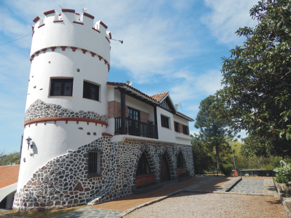

El Complejo Turístico de la Asociación Mutualista del Docente de la Provincia de Córdoba se ubica en la localidad de La Granja a 56 Km. de la ciudad de Córdoba. son 8 Hectareas para disfrutar de la naturaleza, ubicado a 50 Km de la Capital de Cordoba en la Localidad de la La Granja